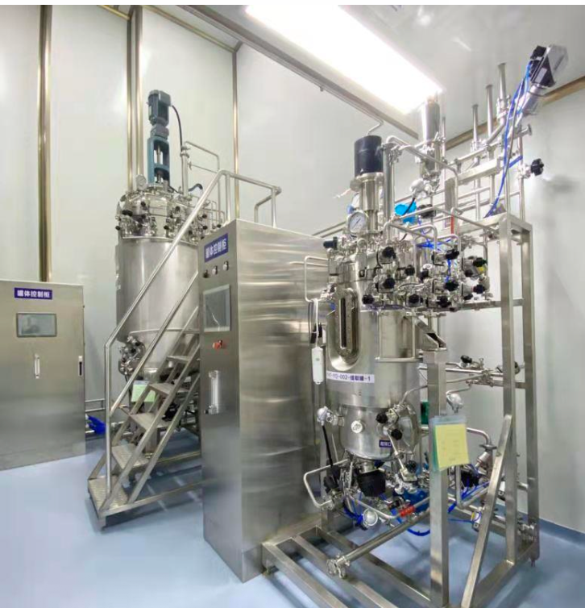
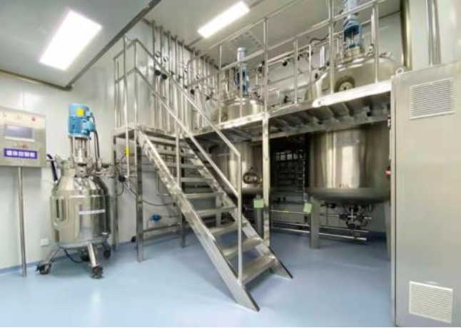
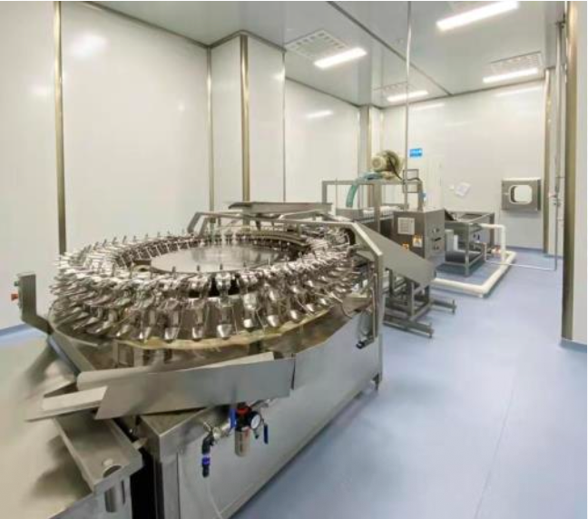
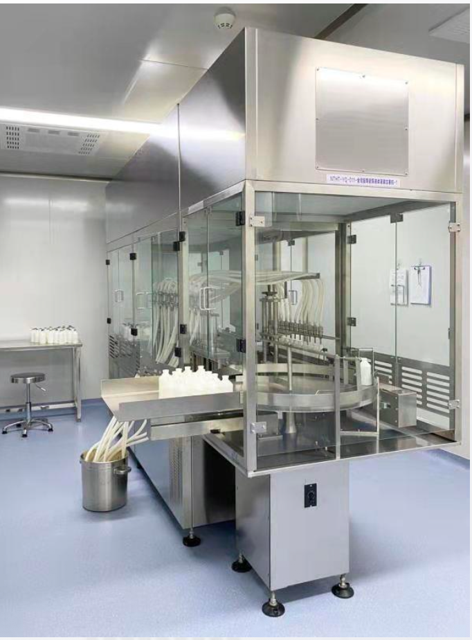
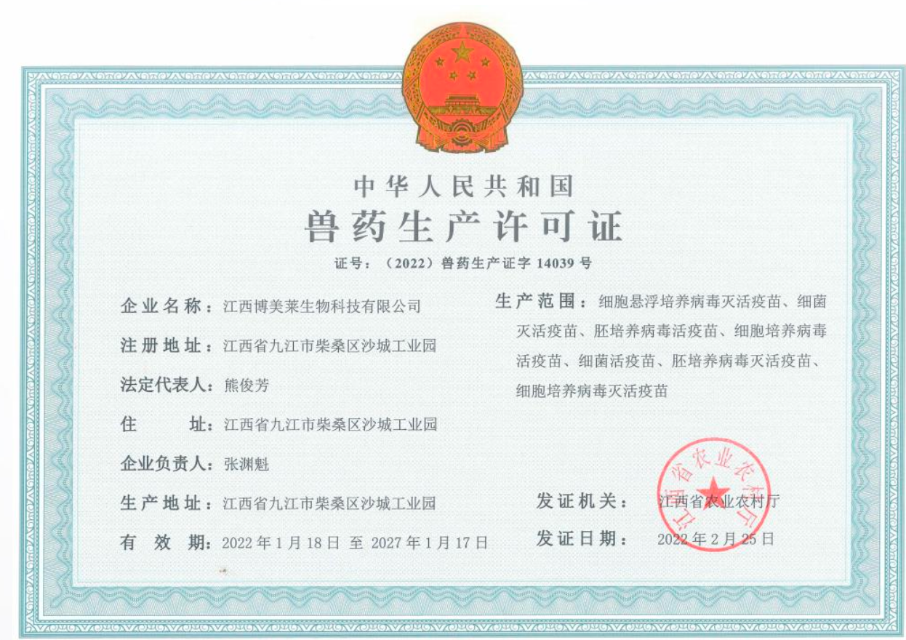
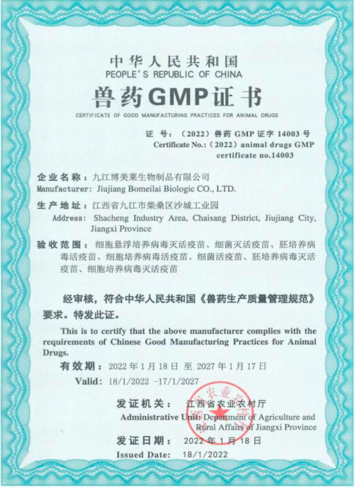
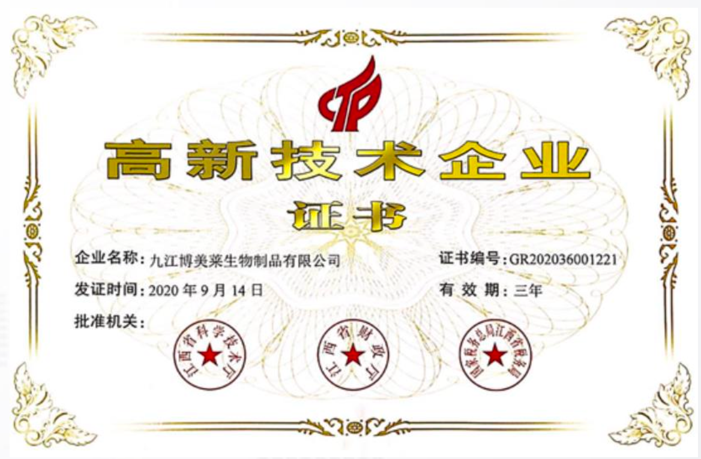
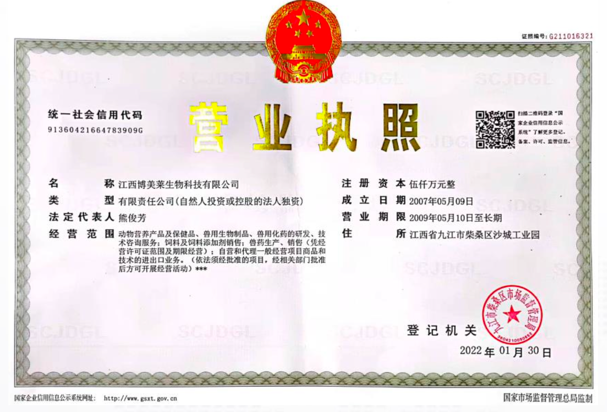

以生物技术解决动物疫病防控问题，助力绿色健康养殖，推进解决药物残留超标等食品安全问题。Solving animal disease control with biotechnology, advancing green and healthy farming, and tackling food-safety issues such as drug-residue exceedance.
海泰生物是一家专注于动物保护（动物疫苗）研发、生产、销售和服务为一体的高新生物技术企业。旗下拥有六家子公司，核心技术领域包括动物疫苗、动物抗体、水产动保、抗菌蛋白、牛用产品等。HiTide Biotech is a high-tech biotechnology enterprise focused on the R&D, manufacturing, sales and service of animal health (animal vaccines). It operates six subsidiaries; its core technology spans animal vaccines, animal antibodies, aquaculture health, antimicrobial proteins and ruminant products.
针对目前国内市场痛点，开发新型基因工程疫苗，做出使用方便、免疫原性好、保护期长的动物疫苗。解决的问题包括：猪蓝耳病、奶牛乳房炎（多联多价）、猫传腹 + 猫三联、鱼的口服疫苗。Addressing key market pain points, it develops novel gene-engineered vaccines that are easy to use, highly immunogenic and long-lasting in protection. Targets include PRRS, dairy mastitis (multivalent), FIP + feline ternary vaccine, and oral fish vaccines.
以美籍华人科学家李其昌博士为领军人物的技术团队，与牛津大学、康奈尔大学等国内外科研院所开展技术合作，建立了包括高效的基因工程疫苗表达技术平台、水产口服疫苗平台、病毒结合蛋白技术平台及新型反向包裹技术等平台。Led by Chinese-American scientist Dr. Li Qichang, the technical team collaborates with Oxford, Cornell and other institutions, building platforms for gene-engineered vaccine expression, oral aquaculture vaccines, virus receptor-binding proteins and novel reverse-encapsulation technology.
博美莱生产车间拥有活疫苗/灭活疫苗共 7 条生产线，海泰生物本部 2 条生产线，覆盖禽用、猪用、牛用、羊用、水产用全品类生物制品。The Bomeilai facility operates 7 live and inactivated vaccine lines, plus 2 lines at HiTide headquarters, covering poultry, swine, cattle, sheep and aquatic biological products.




博美莱（疫苗板块）通过农业农村部新版 GMP 验收，兽药生产许可证与 GMP 证书有效期至 2027 年 1 月。Bomeilai (vaccine segment) passed the Ministry of Agriculture's new GMP inspection; its veterinary manufacturing license and GMP certificate are valid through January 2027.



